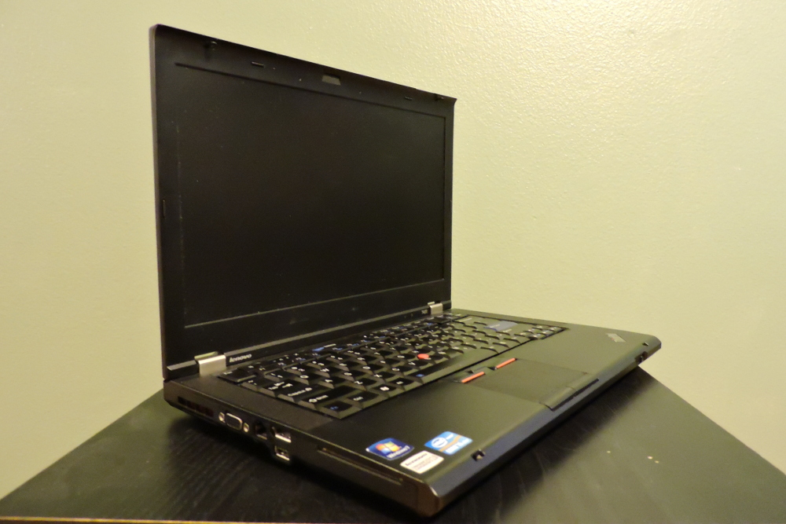

Seiya Ono
seiya.ono12@gmail.com

Computer Builds
All my builds are named after fruits. Why? I like fruit.
Peachy-PC

Peachy-PC is my first self build tower. I picked out the parts and assembled it myself. My now rare GTX 260 came from an older pre-built tower I had. This has been retired for the time being, replaced by an EVGA GTX 950. Future upgrades include: RX 480, DDR4 RAM, and a bigger SSD. It runs Windows 7, and mainly serves as my multimedia computer. Despite its colors, it has the name "Peachy" because I received a plush peach as a gift near the build time.
Melon
Melon is an Acer Chromebook, one of the first of its kind. I got this as a christmas present back in 2013 when the Chromebooks first came out. It has gone through many iterations, including crouton, Arch GNU/Linux (by enabling legacy boot) running GNOME, to LXDE, and then back to crouton. Despite its cheap price and low specs, it runs Arch very well, especially on the ultra-lightweight Light X11 DE. Melon gets its name from its mangled outside to unpredictable innards with its constantly changing OS.
Tomato

Tomato is an IBM Thinkpad T60. It runs Arch GNU/Linux with LXDE. I used this laptop as my primary school work laptop freshman year as well as an Arch tinkering laptop. It ran extremely slow on bootup and did not jive well with IntelliJ or Chrome, but it worked. I owe most of what I now know about the GNU/Linux operating system to Tomato. The name is a reference to Cowboy Bebop.
Kiwi
Kiwi is a Kickstarter Project called PINE64. Despite the backlash it received at launch due to some shipping issues, I found mine to be in good shape and properly delivered. I have it running the special Debian distro specially made for the board, and use it as a portable multimedia device, an SSH server, and as a play tool. It gets its name from the dark green color of the board.
Korean-Apple Pear Proclaimed by Andy (K.A.P.P.A)

Kappa is a Frankenstein computer. All of its parts, minus the 4-pin to SATA power, comes from my club, Pioneers in Engineering. I scavenged a few mysterious parts, threw them into a box, and secured them all down by hot gluing lego pieces to keep the parts in place. Then I cut out holes on the sides for power, mobo-out, and a fan from Peachy-PC's left over CPU cooler that I didn't use for that build. By docking the CPU fan on the side, air flow was possible. With the lack of a case comes with a lack of a power button. I took two female-to-male shorts and stabbed the male end through one of the side walls. I then took a lego figurine and glued a piece of aluminum foil on its back. By touching the figure on the two exposed pins, it creates a short and turns on the computer. I installed Windows 7 as well as Elementary OS on it. It runs smoothly, and it will sit in my club room for everyone's use. The hard drive had to be wiped after realizing I had installed a 32-bit version of Windows 7, to replace with the 64-bit version. The name originates from the at-the-time club director, Andy's, favorite fruit, the Korean-Apple Pear.
JamCherri


JamCherri is a Thinkpad T420. It is by far my favorite laptop I have owned. Reasonably priced, but still packs a punch. It came with Windows 8, and soon upgraded to 10. I immediately installed Arch GNU/Linux as soon as possible. The desktop environment of choice is XFCE4, and is my current work laptop. It has 4 hours of battery life, and runs lightening quick. JamCherri gets its strange name from my high school drumline director's nickname.
Guava

Guava is a tower built from spare parts. The motherboard, ram, and CPU come from my club, while the powersupply was bought off my friend, the case was purshased new, and the GPU was from Peachy-PC. Its main purpose is to serve as a home computer for my family. The overall setup has a very nice pearly finish to it, with a white keyboard, a white mouse, a completely white case on a white desk. The keyboard and mouse both glow green, hence the name Guava.